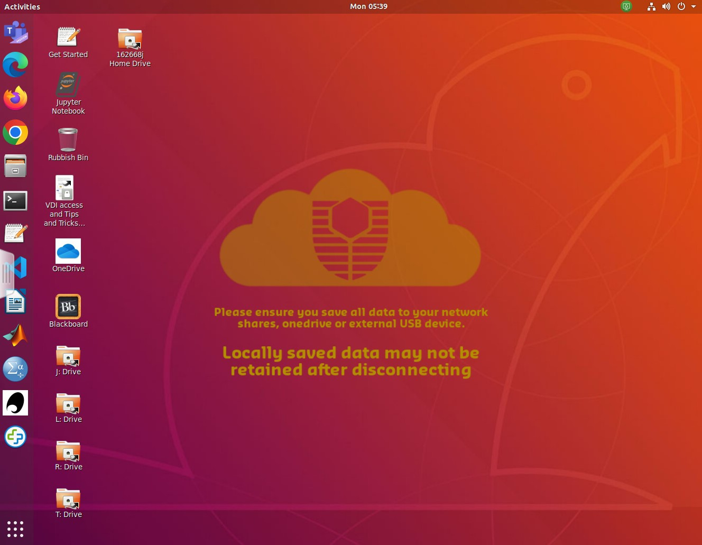

Prac00: Introduction to Linux
Last updated on 2026-08-13 | Edit this page
Overview
Questions
- How do I login in to the Virtual Machines?
- Where do I find and access files in Linux?
- How do I create and run a program using Linux?
Objectives
- Define and use key commands in the Linux operating system
- Edit files using vim
- Run simple Python code in a Linux environment
Introduction
This practical will give a gentle introduction to Linux. It can be done before or after the first lecture - but do not delay as we’ll need everything from this lesson to build on in future weeks.
In class you will be accessing a Linux environment (operating system) through a web browser. We will connect to a Virtual Machine - using servers in the cloud which can run multiple “virtual” machines at once. These, in turn, connect to fileservers where you can store your files and access them from any Curtin computer, or from your home machine(s).
Note: If you are working remotely, or are not on Bentley Campus, you may have an alternative setup to access Linux. Your Lecturer will guide you through Activity 0.
That may be too much information for right now… so let’s dive in and find out how to use Linux!
Activity 1 - Accessing Linux
In the laboratory:
- login to the machines with your Oasis login.
- Once you’re connected, open a web browser and go to mydesktop.curtin.edu.au.
- You can choose either the install or HTML option, but for the labs we will use Omnissa Horizon HTML Access. You’ll need to authenticate and login again, don’t worry about selecting STAFF/STUDENT it will stay as STAFF.
- Choose either Computer Science Linux Lab or Curtin Global Linux - this tells the system which flavour of operating system you want to use. (they are both the same, but can be useful as options when we have technical issues)
- It will take a few minutes for all the icons to arrive, so this is a good time to get your screens setup - one for the prac sheet/page and the other for working in Linux is recommended.
- Your screen should look something like this…

Activity 2 - The Command Line
Now we need to open a terminal window to interact with the Linux computer. There is a graphical (GUI) interface, however the command line is more powerful (eventually).
The terminal application is on the left of the screen (a black rectangle). We can make sure it points to the correct area for your files by opening the I: drive icon and then right-clicking to get a pop-up menu and select open in terminal.
There are a lot of commands you can use in Linux, but you only need a few to get started. A sample of the Unix commands available to you have been provided below. We will learn more commands as we go through the unit.
Try typing the following commands (one at a time) and check what they do…
ls
ls –l
pwd
mkdir test
ls
cd test
ls
ls –laHere are a few of the most common commands… the < > braces are a convention to indicate text that you replace. Note that in Unix/Linux folders are referred to as directories.
| Command | Description | Examples |
|---|---|---|
| ls | Lists all files in the current directory, if an argument is provided lists all files in the specified directory. | ls, ls –l, ls –la |
| cp |
Copies the file from source to destination. | cp Downloads/test.py ., cp test.py test2.py |
| mv |
Moves the file from source to destination. If the destination ends in a file name it will rename the file. | mv test.py Prac1, mv test.py mytest.py |
| pwd | Lists the directory you are currently in (Print Working Directory) | pwd |
| cd | Moves to | |
| mkdir | Creates a new directory | mkdir Prac1 |
| rm |
Removes a file | rm fireballs.py |
| rmdir | Removes a directory (must be empty first) | rmdir Prac12 |
Using these commands create the following directory structure within
your home directory. A How to use Unix and cheatsheet document
has been uploaded to Blackboard, it will be helpful if you get stuck.
Note you can use the arrow keys to get back to previous commands, and
can use
- PPP
- Prac00
- Prac01
- Prac02
- Prac03
- Prac04
- Prac05
- Prac06
- Prac07
- Prac08
- Prac09
- Prac10
- Prac11
The current directory is referenced by a single fullstop (.), the parent directory is referenced by two fullstops (..) and all pathways are relative to the current location.
For example…
cd PPP/Prac01
cd ../Prac00…takes you into PPP/Prac01, then on the second line, back up and into Prac00
Activity 3 - Introduction to the Text Editor (vim)
We are going to use the vim text editor to create your README file for Prac01. Vim is an enhanced version of vi – a visual, interactive editor. There is an Introduction to Vi document and a “cheat-sheet” on Blackboard, but you should work through this prac before try ing it.
If you’re not already there, change directory into the Prac00 directory and create the README file:
> cd Prac00
> vim READMEYou will now be in the vim text editor with an empty file. Vim has two modes – command mode (where you can move around the file and use commands) and insert text mode. Type “i” to go into insert mode and type in the following README information for Practical 1.
## Synopsis
Practical 0 of Programming Principles and Practices COMP5017
## Contents
README – readme file for Practical 0
## Dependencies
none
## Version information
<today’s date> - initial version of Practical 0 programsPress <esc> to exit insert mode, then :wq to save
the file (w) and exit vim (q). Type
ls -l(-l for long listing) and you will see that you have created a file called README, and it has a size and a date. We will make README files for all of our practicals to hold information about the files in that directory.
Activity 4 - Welcome to Python!
Below is a simple program to get you used to the editor and running python scripts. To create a file for the program, type:
vim hello.pyThen type in the following code… It is important to type it yourself and not copy/paste – this is how you will learn and remember!
PYTHON
#
# hello.py: Print out greetings in various languages
#
print('Hello')
print("G'day")
print('Bula')
print("Kia ora")To run the program, type:
python3 hello.pyYou will probably get an error message as a response (unless you
typed it in perfectly). Don’t worry, check through your code for the
error and try running it again. Go back into the file and make
corrections – use the cursor keys to get to the position (
- to delete a character type “x”
- to delete a line “dd”
- to delete a word “dw”
- to change a word “cw”
- to insert/append after the end of the current line, type “A”
- to undo the last command, type “u”
- to redo the last command, type “.”
Save the file and try to run it again. If you’re having trouble, ask your tutor, or even the person next to you, to see if they can find what’s wrong. Sometimes it takes someone else’s fresh and/or experienced eyes to see an error. This is called “debugging” and the reward comes when the code finally runs!
Try adding some more greetings of your own…
Activity 5 - Updating the README
You now have a program and a README in the Prac00 directory. Enter the name of each of them along with a description under “Contents” in the README file.
Activity 6 - Making and submitting a zip file
To bundle up and compress files we can use zip/unzip. Similar programs are tar (Tape Archive) and gzip (GNU zip).
To make a zipped file for Practical 0, go to the Prac00 directory inside your PPP directory. Type pwd to check that you are in the right place.
Create the zip file by typing:
zip Prac00_<your_student_ID> *
e.g. zip Prac00_12345678 *
This will create a file Prac00_
unzip –l Prac00_<your_student_ID>.zipActivity 7 - Submission
All of your work for this week’s practical should be submitted via Blackboard using the Practical 0 link. This should be done as a single “zipped” file. This is the file to submit through Blackboard.
There are no direct marks for these submissions, but they may be taken into account when finalising your mark. Go to the Assessment link on Blackboard and click on Practical 0 for the submission page.
And that’s the end of Practical 0!
- We will be using Linux as our operating system for this unit
- You can access Linux through mydesktop.curtin.edu.au or install Python and a “Linux” shell on your home machine
- Working on the command line, we will type in commands at the prompt, press enter, and wait for the computer’s response
- To create and edit a text file, we will be using vim - a program for editing text files
- Once we have entered a Python program as a text file, with a “.py”
extension, we can run the program by typing
python3 myprog.py
Reflection
- Knowledge: What are the two modes in vi / vim?
- Comprehension: What is the name of the lab machine you are working on? Hint: use the hostname command or look at the prompt.
- Application: What series of commands would you need to go to the directory PPP/assignment in your home directory and compress all the files?
-
Analysis: The code
print("G'day")uses two types of quotation marks (single and double). What would happen if they were all single quotes? -
Synthesis: The code in
hello.pyis a bit repetitious. What commands in vim can help you save time writing such code? (hint: you can copy and paste the common code, then edit it) - Evaluation/Reflection: What part of the prac did you find most challenging? (You can give feedback to the lecturer/tutor…)
Challenge
For those who want to explore a bit more of the topics covered in this practical.
- Work through a Linux tutorial
- Work through a vi/vim tutorial
- Read some samples of README files for large projects - https://github.com/matiassingers/awesome-readme